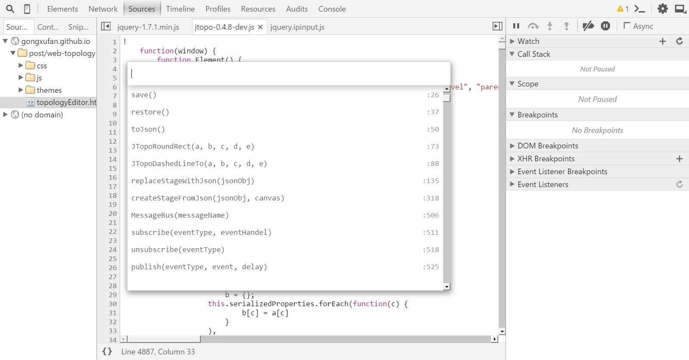
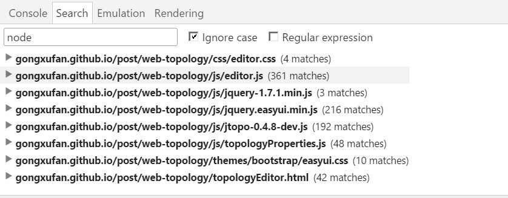
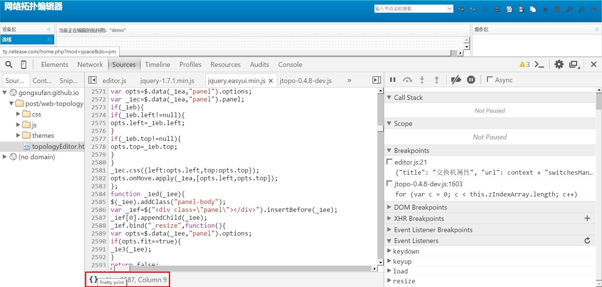

web开发前端调试工具 - Chrome DevTools
在前端开发过程中我们需要对JS进行调试和跟踪，往往就离不开顺手的调试工具。各大主流浏览器都提供了开发者工具，如FF的 firebug、IE11后的开发者工具有了较大的提升、还有就是webkit内核浏览器，常见的就是Chrome提供的开发者工具了。本人将讨论 Chrome DevTools
工欲善其事必先利其器，F12打开Chrome DevTools。本文是用Opera浏览器做的测试，其调试工具就是Chrome的开发者工具，其 快捷键为ctrl + shift + i。打开后界面如下：
这里特别说明一下：chrome更新40+之后，f12工具显示位置，默认只能右边和下边切换，无法单独窗口。
这对于强迫症的码农来说，简直就是逆天。还好Chrome还是保留了该功能，只是藏的比较深。具体操作如下：在右上角
“Dock to right”，鼠标长按即可出现下拉图标，选中下面的图标即可切换到独立窗口模式。如下图所示：

本人只是讲解几个主要的几个调试技巧，不进行太详细的阐述，更多的可以在使用中去发现。网上 也有大量的指南，最重要的还是靠自己去实践。
1、快速定位JS文件和函数
在选项面板可以查看所有的快捷键。 使用快捷键ctrl + o或者ctrl + p可以迅速定位你要找的JS文件。在一个JS文件里，如果你想迅速 定位到某个方法可以使用Ctrl + shift + o，可以查看JS文件的所有方法。  另外使用Ctrl + Shift + F可以在多个JS文件中进行全局查找，可以做正则匹配，结果 会以列表的形式展示。 
2、断点调试
最基本的断点调试就是JS源文件中打上断点，然后进行调试。
下面重点讲述一下右边调试面板的内容，如上图所示右边面板分为以下几个部分：Watch,Call Stack, Scope,Breakpoints,DOM Breakpoints,XHR Breakpoints,EventListener Breakpoints。
Watch窗口显示的我们手动添加监控的变量或表达式的值。我们在源文件中选中某个变量，然后右键选择 ”Add to watch“，即可把该变量添加到监视窗口。
Call Stack窗口显示的是当前断点函数的调用堆栈，可以方便我们找到方法的调用关系。
Scope窗口显示的是每个作用域下的变量，根据JS的作用域的不同分为三种：
Local面板显示的是函数局部变量的信息，如下面这个函数： 有2个局部变量a和b，那么在Local面板就会展示他们信息，this的内容也会在这里展示。
Closure面板展示的是JS闭包函数的信息，而Global则是全局window对象的信息。
Breakpoints窗口显示的是所有JS源文件中的断点位置，可以单击鼠标定位到断点所在的
源代码行。

DOM Breakpoints浏览器加载DOM出发的特定事件，我们也可以打断点进行查看。可以在Element面板，
选中某个DOM节点，然后右键给该节点添加DOM改变的事件。当内容发生变化时，会出发这个事件。查看是
那个代码造成该事件。

XHR Breakpoint可以为给定的Ajax请求设定断点，可以在该面板点击加号按钮就可用添加断点了。 当含有这个关键字的URL的Ajax请求出发时就可以进行调试了。
EventListener Breakpoints窗口可以对浏览器支持的每一种事件都进行断点调试，只要在这个窗口勾选了的 事件被出发，则会在触发代码处开始调试。
3、查看DOM绑定的事件
打开Element窗口，选中某个DOM元素，在右边的面板会暂时其绑定的所有事件。
4、动态调试和JS美化
在Sources窗口可以直接修改JS内容，然后Ctrl + S保存之后，就可以实时生效调试了。 对于压缩的JS可以点击下方"{}"Pretty print按钮，将JS美化，就可以方便调试了。 但是美化过的JS不能修改进行实时调试了。 
本文暂时先介绍这些，更多的功能和技巧要我们自己去探索和积累。